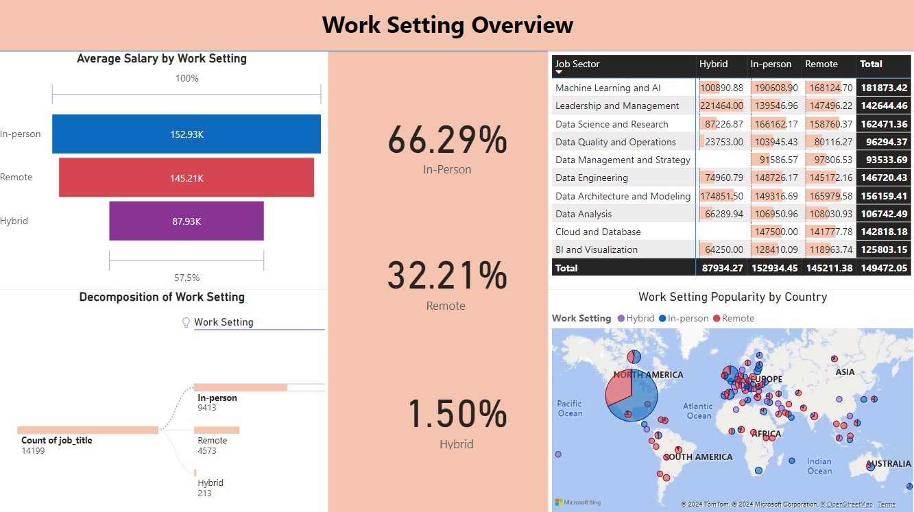
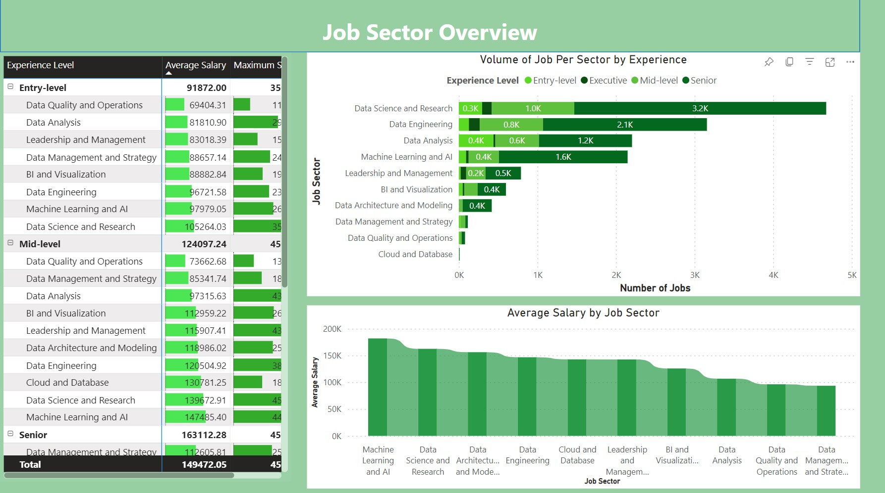
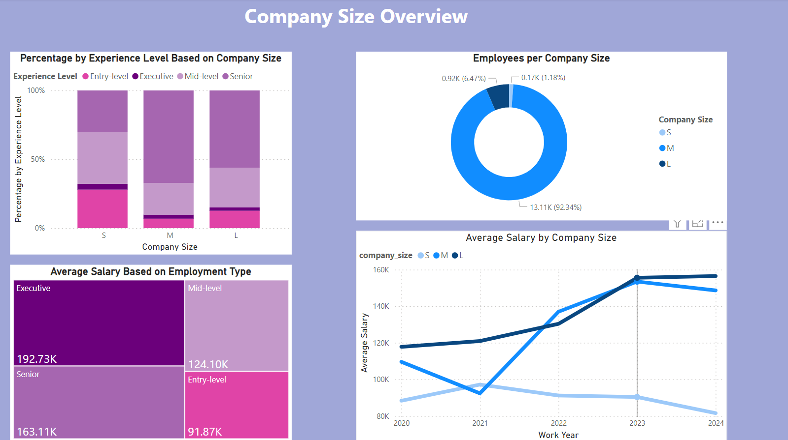

The PowerBI analysis uncovers intriguing insights into work settings within the data job landscape. With 66.29% of roles favoring in-person work, 32.21% embracing remote setups, and 1.5% adopting hybrid models, the distribution reflects a diverse array of global preferences, particularly evident in the predominantly American dataset.
Of particular note is the correlation between work setting and salary, with in-person roles commanding higher averages. Upon closer examination, we discern distinct sectoral inclinations: data science and research roles tend to favor in-person collaboration, while positions in data architecture, analysis, and management exhibit a pronounced preference for remote flexibility.
These findings shed light on the complex dynamics influencing the data job market, providing valuable insights for organizations navigating the evolving landscape of work modalities and employee preferences.

The analysis of job sectors within the data industry reveals nuanced trends across experience levels, with a particular focus on entry-level opportunities, which serve as a crucial gateway for aspiring professionals. Sectors such as data science, data engineering, data analysis, and machine learning and AI emerge as fertile grounds for novices, offering numerous entry-level positions.
Conversely, the absence of entry-level roles in data architecture and data management suggests a trajectory of skill development before venturing into these domains. When examining salary dynamics, Machine Learning and AI stand out as the pinnacle of earning potential, boasting the highest average salary across all experience levels, with a notable exception at the entry level.
In contrast, data science and research lead in entry-level salaries, providing an enticing starting point for newcomers. However, a nuanced observation arises with data analysis roles—while abundant at the entry level, the sector's average salary remains relatively modest compared to others. This insight positions data analysis as an ideal springboard for career advancement towards higher-paying sectors within the dynamic data landscape.

In this insightful analysis, I delve into the relationship between company size and experience levels in data analytics roles. Before delving into these interactions, it's crucial to note key identifiers. Upon analyzing salary trends, I discovered that large companies offer the highest average pay, followed by medium-sized firms, while smaller companies trail considerably.
However, a closer examination reveals that smaller companies offer a higher percentage of entry-level positions, while medium-sized companies pay the most for these roles. Transitioning to mid-level and senior positions, large companies emerge as top payers, with medium-sized firms showcasing abundant opportunities.
When it comes to executive positions, although they are scarce across all sizes, they offer the highest pay in medium-sized companies, suggesting potential career paths. In summary, this analysis presents two potential career trajectories: leveraging medium-sized companies for entry-level roles and progressing to executive positions, or targeting mid-level and senior positions in large enterprises. These insights offer valuable guidance for navigating the path to executive-level success in the dynamic data analytics landscape.

As an entry-level prospect exploring opportunities in the data job market, I've uncovered several key insights that can shape my career trajectory. Firstly, regarding work settings, it's evident that while in-person roles dominate, remote and hybrid options are also available, offering flexibility in where I choose to work. However, it's crucial to note that in-person roles tend to offer higher average salaries, particularly in sectors like data science and research, which align with the hands-on nature of these positions.
Delving into job sectors, I've identified promising avenues for entry-level positions, notably in data science, data engineering, data analysis, and machine learning and AI. These sectors offer abundant opportunities for newcomers like myself to gain valuable experience and kickstart my career in the data field. However, it's essential to recognize that while data analysis roles are prevalent at the entry level, they may serve as a stepping stone towards higher-paying sectors within the industry.
Considering company size dynamics, I've learned that medium-sized companies could offer the most lucrative starting point for entry-level positions. Despite smaller companies having a higher percentage of entry-level roles, medium-sized companies tend to offer higher pay for these positions. Furthermore, transitioning to mid-level and senior roles, large companies emerge as top payers, providing opportunities for career advancement and higher compensation.
In conclusion, armed with these insights, I am better equipped to navigate the data job market as an entry-level prospect. By targeting sectors with abundant entry-level opportunities, considering the work setting that aligns with my preferences, and strategically choosing companies that offer competitive compensation for entry-level positions, I can pave the way for a successful career in the dynamic and evolving field of data analytics.